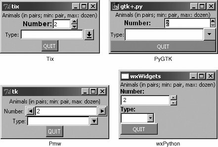
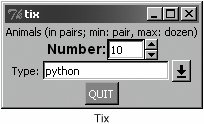

19.4. Brief Tour of Other GUIsWe hope to eventually develop an independent chapter on general GUI development using many of the abundant number of graphical toolkits that exist under Python, but alas, that is for the future. As a proxy, we would like to present a single simple GUI application written using four of the more popular and available toolkits out there: Tix (Tk Interface eXtensions), Pmw (Python MegaWidgets Tkinter extension), wxPython (Python binding to wxWidgets), and PyGTK (Python binding to GTK+). Links to where you can get more information and/or download these toolkits can be found in the reference section at the end of this chapter. The Tix module is already available in the Python standard library. You must download the others, which are third party. Since Pmw is just an extension to Tkinter, it is the easiest to install (just extract into your site packages). wxPython and PyGTK involve the download of more than one file and building (unless you opt for the Win32 versions where binaries are usually available). Once the toolkits are installed and verified, we can begin. Rather than just sticking with the widgets we've already seen in this chapter, we'd like to introduce a few more complex widgets for these examples. In addition to the Label and Button widgets we have seen before, we would like to introduce the Control or SpinButton and ComboBox. The Control widget is a combination of a text widget with a value inside being "controlled" or "spun up or down" by a set of arrow buttons close by, and the ComboBox is usually a text widget and a pulldown menu of options where the currently active or selected item in the list is displayed in the text widget. Our application is fairly basic: pairs of animals are being moved around, and the number of total animals can range from a pair to a dozen max. The Control is used to keep track of the total number while the ComboBox is a menu containing the various types of animals that can be selected. In Figure 19-8, each image shows the state of the GUI application immediately after launching. Note that the default number of animals is two, and no animal type has been selected yet. Figure 19-8. Application using various GUIs under Win32 (animal*.pyw) Things are different once we start to play around with the application, as evidenced in Figure 19-9 after we have modified some of the elements in the Tix application. Figure 19-9. After modifying the Tix GUI version of our application (animalTix.pyw) Below, you will find the code for all four versions of our GUI. You will note that although relatively similar, each one differs in its own special way. Also, we use the .pyw extension to suppress the popping up of the Dos command or terminal window. 19.4.1. Tk Interface eXtensions (Tix)We start with an example (Example 19.7) of using the Tix module. Tix is an extension library for Td/T that adds many new widgets, image types, and other commands that keep Tk a viable GUI development todkit. Let's take look at how to use Tix with Python. Example 19.7. Tix GUI Demo (animalTix.pyw)
Line-by-Line ExplanationLines 17This is all the setup code, module imports, and basic GUI infrastructure. Line 7 asserts that the Tix module is available to the application. Lines 827These lines create all the widgets: Label (lines 9-11), Control (lines 13- 16), ComboBox (lines 18-21), and quit Button (lines 23-25). The constructors and arguments for the widgets are fairly self-explanatory and do not require elaboration. Finally, we enter the main GUI event loop in line 27. 19.4.2. Python MegaWidgets (PMW)Next we take a look at Python MegaWidgets as shown in Example 19.8. This module was created to address the aging Tkinter. It basically helps the extend its longevity by adding more modern widgets to the GUI palette. Example 19.8. Pmw GUI Demo (animalPmw.pyw)
The Pmw example is so similar to our Tix example that we leave line-by-line analysis to the reader. The line of code that differs the most is the constructor for the control widget, the Pmw Counter. It provides for entry validation. Instead of specifying the smallest and largest possible values as keyword arguments to the widget constructor, Pmw uses a "validator" to ensure that the values do not fall outside our accepted range. Now, we are finally going to leave the Tk world behind. Tix and Pmw are extensions to Tk and Tkinter, respectively, but now we are going to change gears to look at completely different toolkits, wxWidgets and GTK+. You will notice that the number of lines of code starts to increase as we start programming in a more object-oriented way when using these more modern and robust GUI toolkits. 19.4.3. wxWidgets and wxPythonwxWidgets (formerly known as wxWindows) is a cross-platform toolkit used to build graphical user applications. It is implemented using C++ and is available on a wide number of platforms to which wxWidgets defines a consistent and common API. The best part of all is that wxWidgets uses the native GUI on each platform, so your program will have the same look-and-feel as all the other applications on your desktop. Another feature is that you are not restricted to developing wxWidgets applications in C++. There are interfaces to both Python and Perl. Example 19.9 shows our animal application using wxPython. Example 19.9. wxPython GUI Demo (animalWx.pyw)
Lines 537Here we instantiate a Frame class (lines 5-8), of which the sole member is the constructor. This method's only purpose in life is to create our widgets. Inside the frame, we have a Panel. Inside the panel we use a BoxSizer to contain and layout all of our widgets (lines 10, 36), which consist of a Label (lines 12-14), SpinCtrl (lines 16-20), ComboBox (lines 22-27), and quit Button (lines 29-34). We have to manually add Labels to the SpinCtrl and ComboBox widgets because they apparently do not come with them. Once we have them all, we add them to the sizer, set the sizer to our panel, and lay everything out. On line 10, you will note that the sizer is vertically oriented, meaning that our widgets will be placed top to bottom. One weakness of the SpinCtrl widget is that it does not support "step" functionality. With the other three examples, we are able to click an arrow selector and have it increment or decrement by units of two, but that is not possible with this widget. Lines 3951Our application class instantiates the Frame object we just designed, renders it to the screen, and sets it as the top-most window of our application. Finally, the setup lines just instantiate our GUI application and start it running. 19.4.4. GTK+ and PyGTKFinally, we have the PyGTK version, which is quite similar to the wxPython GUI (See Example 19.10). The biggest difference is that we use only one class, and it seems more tedious to set the foreground and background colors of objects, buttons in particular. Example 19.10. PyGTK GUI Demo (animalGtk.pyw)
Line-by-Line ExplanationLines 16We import three different modules and packages, PyGTK, GTK, and Pango, a library for layout and rendering of text, specifically for I18N purposes. We need it here because it represents the core of text and font handling for GTK+ (2.x). Lines 851The GTKapp class represents all the widgets of our application. The topmost window is created (with handlers for closing it via the window manager), and a vertically oriented sizer (VBox) is created to hold our primary widgets. This is exactly what we did in the wxPython GUI. However, wanting the static labels for the SpinButton and ComboBox-Entry to be next to them (unlike above them for the wxPython example), we create little horizontally oriented boxes to contain the label-widget pairs (lines 18-36), and placed those HBoxes into the all-encompassing VBox. After creating the quit Button and adding the VBox to our topmost window, we render everything on-screen. You will notice that we create the button with an empty label at first. We do this so that a Label (child) object will be created as part of the button. Then on lines 45-46, we get access to the label and set the text with white font color. The reason why we do this is because if you set the style foreground, i.e., in the loop and auxiliary code on lines 41-44, the foreground only affects the button's foreground and not the labelfor example, if you set the foreground style to white and highlight the button (by pressing TAB until it is "selected") you will see that the inside dotted box identifying the selected widget is white, but the label text would still be black if you did not alter it like we did with the markup on line 46. Lines 5355Here we create our application and enter the main event loop. |